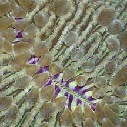
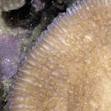
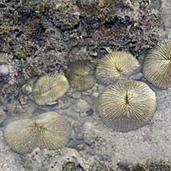
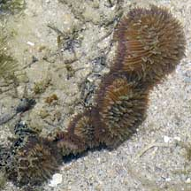
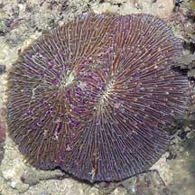
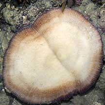
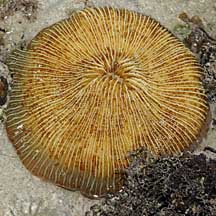
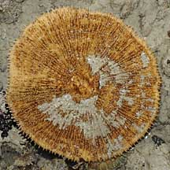
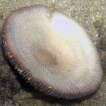

|
|
| hard corals text index | photo index |
| Phylum Cnidaria > Class Anthozoa > Subclass Zoantharia/Hexacorallia > Order Scleractinia > Family Fungiidae > Genus Fungia |
| Circular
mushroom coral Fungia sp.* Family Fungiidae updated Nov 2019
Where seen? This saucer-shaped hard coral is sometimes seen on many of our Southern shores, on sandy shallow areas near living reefs. On some undisturbed shores, many individuals in various stages of development can be seen near one another. Features: Skeleton 10-15cm in diameter, but tiny ones 1-2cm sometimes seen attached to hard surfaces. Overall shape flat, circular and convex disk somewhat like a frisbee or upside-down saucer. Upper surface with thin continuous lines radiating from the centre, in some, the lines have fine 'teeth'. Single slit-like mouth in the centre of the upper surface. Often has banded 'lips' around the mouth. Tentacles are small, fat, short, tapering, rather sparse and even when fully extended, don't obscure the skeleton. Tentacles may be extended both during the day and at night. The underside usually concave, some with radiating lines of short bumps. Large ones lie unattached, sometimes in groups of several individuals of different sizes. Small ones are seen stuck to coral rubble often in clusters of several individuals. Colours seen include beige, brown, pink, blue, purplish, greenish. Some Fungia species may also be elongated and oval, rather than circular. Sometimes confused with the Sunflower mushroom hard coral (Heliofungia actiniformis) especially when the tentacles are retracted. The Sunflower mushroom hard coral also has a flat circular skeleton. However, it has long cylindrical white-tipped tentacles that when full extended, completely obscures the skeleton so that the coral resembles a sea anemone. |
 Raffles Lighthouse, Jul 06 |
 Single slit-like mouth often with banded 'lips'. |
 Fat short tentacles. |
 Underside somewhat concave. |
 |
 Often found in clusters. Terumbu Raya, May 10 |
|
 Young corals still stuck to a rock. Sisters Island, Jan 07 |
 Young corals on stalks. Tanah Merah, Jul 11 |
 Dead coral with stalk on the underside. Terumbu Pempang Laut, Apr 11 |
|
 Sisters Island, Dec 05  Splitting up into two? |
 Beting Bemban Besar, Jun 09  |
 Sisters Island, Feb 06  |
*Species are difficult to positively identify without close examination.
On this website, they are grouped by external features for convenience of display.
| Circular mushroom corals on Singapore shores |
On wildsingapore
flickr
|
| Other sightings on Singapore shores |